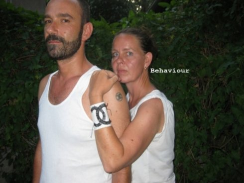

a woman of today

KarØ GOLDT
|
Karø
Goldt geb. 1967 in Günzburg, lebt
und arbeitet in Berlin und Wien. Studium der Fotografie in
Wien bei Friedl Kubelka / vom Gröller. Seit 2001 arbeitet
sie im Bereich experimentelles Kino; ihre aus digitalen
und analogen Fotografien animierteVideokunst ist vielfach
preisgekrönt und wird in Ausstellungen und Festivals
weltweit gezeigt.
|
MOntag 15 okt 18.30 werkstattkino
Die Betitelung von Bildern stellt Künstler*innen des Visuellen
oft vor die Aufgabe, mit Worten umgehen zu müssen, was überfordend
sein kann. Auch Synopsen zu Videos sind oft schwierig. Bei der
Videoarbeit A WOMAN OF TODAY habe ich das Experiment gewagt,
zwischen die Videos Texte zu stellen, die diese zu einer
Geschichte verbinden.
Bei dem Fotobuch „Inter View“ habe ich mich einer Literaturliste
bedient, um die Fotos durch die Betitelung in einen neuen
Zusammenhang zu stellen.
Die Aufnahmedaten der abgebildeten Fotografien erstrecken sich von
1995-2018, die Produktionsjahre der Videos sind 2003-2017. A WOMAN
OF TODAY und das Buch "Inter View" geben also eine Übersicht
ohne vollständig alle Werkgruppen zu zeigen. (Karø Goldt)